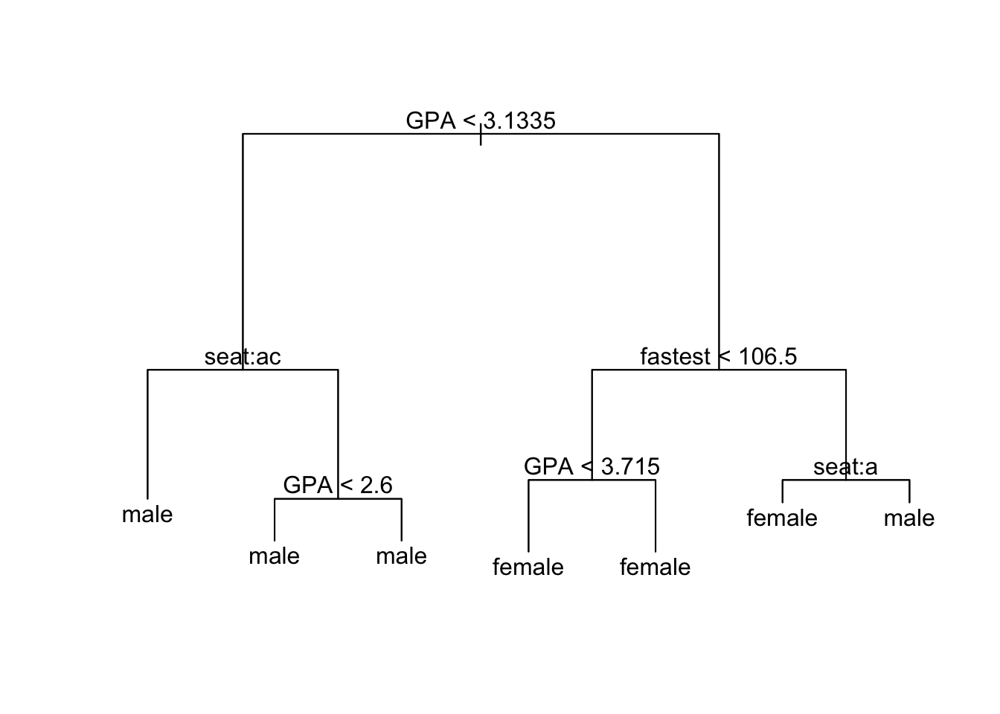
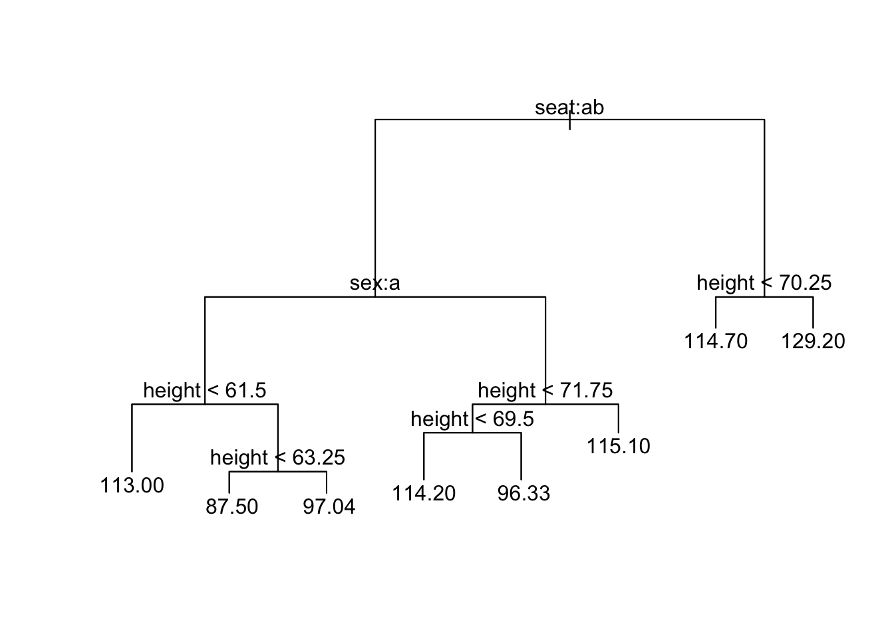

tree() Function: Basic UseWe’ll work with the m111survey data frame from the tigerstats package:
help(m111survey)
str(m111survey)## 'data.frame': 71 obs. of 12 variables:
## $ height : num 76 74 64 62 72 70.8 70 79 59 67 ...
## $ ideal_ht : num 78 76 NA 65 72 NA 72 76 61 67 ...
## $ sleep : num 9.5 7 9 7 8 10 4 6 7 7 ...
## $ fastest : int 119 110 85 100 95 100 85 160 90 90 ...
## $ weight_feel : Factor w/ 3 levels "1_underweight",..: 1 2 2 1 1 3 2 2 2 3 ...
## $ love_first : Factor w/ 2 levels "no","yes": 1 1 1 1 1 1 1 1 1 1 ...
## $ extra_life : Factor w/ 2 levels "no","yes": 2 2 1 1 2 1 2 2 2 1 ...
## $ seat : Factor w/ 3 levels "1_front","2_middle",..: 1 2 2 1 3 1 1 3 3 2 ...
## $ GPA : num 3.56 2.5 3.8 3.5 3.2 3.1 3.68 2.7 2.8 NA ...
## $ enough_Sleep : Factor w/ 2 levels "no","yes": 1 1 1 1 1 2 1 2 1 2 ...
## $ sex : Factor w/ 2 levels "female","male": 2 2 1 1 2 2 2 2 1 1 ...
## $ diff.ideal.act.: num 2 2 NA 3 0 NA 2 -3 2 0 ...Suppose we intend to use our data to construct a tree that predicts the sex of a person based upon where a person prefers to sit, fastest speed he/she has ever driven, and the high-school GPA. We can construct such a model as follows:
trMod <- tree(sex ~ seat + fastest + GPA, data = m111survey)For a text-based view of the resulting tree, simply print it out:
trMod## node), split, n, deviance, yval, (yprob)
## * denotes terminal node
##
## 1) root 70 96.120 female ( 0.55714 0.44286 )
## 2) GPA < 3.1335 26 32.100 male ( 0.30769 0.69231 )
## 4) seat: 1_front,3_back 14 19.410 male ( 0.50000 0.50000 ) *
## 5) seat: 2_middle 12 6.884 male ( 0.08333 0.91667 )
## 10) GPA < 2.6 5 5.004 male ( 0.20000 0.80000 ) *
## 11) GPA > 2.6 7 0.000 male ( 0.00000 1.00000 ) *
## 3) GPA > 3.1335 44 53.410 female ( 0.70455 0.29545 )
## 6) fastest < 106.5 28 26.280 female ( 0.82143 0.17857 )
## 12) GPA < 3.715 21 23.050 female ( 0.76190 0.23810 ) *
## 13) GPA > 3.715 7 0.000 female ( 1.00000 0.00000 ) *
## 7) fastest > 106.5 16 22.180 male ( 0.50000 0.50000 )
## 14) seat: 1_front 8 10.590 female ( 0.62500 0.37500 ) *
## 15) seat: 2_middle,3_back 8 10.590 male ( 0.37500 0.62500 ) *For a summary account:
summary(trMod)##
## Classification tree:
## tree(formula = sex ~ seat + fastest + GPA, data = m111survey)
## Number of terminal nodes: 7
## Residual mean deviance: 1.089 = 68.63 / 63
## Misclassification error rate: 0.2714 = 19 / 70For a plot with textual annotations:
plot(trMod) # draws the branches
text(trMod) # adds the annotation
Note that splits involving the factor variable seat are coded by letter of the alphabet, in order of the levels of the factor variable:
The letters shown at a given node indicate the left-hand split. Thus the node annotated as seat: ac gets split into two: those who sit in the front or the back go into the terminal node on the left, whereas everyone else—the middle-sitter,s in this case—are placed into a node that is subsequently split according to GPA.
When the response variable is numeric then we are making regression trees. The syntax is just the same as for classification trees. For example, to predict fastest speed every driven from sex, seat, height and GPA, then use:
trFast <- tree(fastest ~ sex + seat + height + GPA, data = m111survey)Viewing works just the same way as for classification trees, for example:
plot(trFast); text(trFast)
If all variables in the data other than the response variable could be used as predictors, then we don’t have to type them all in: instead we just type a . after the ~ in the formula, thus:
trModAllVars <- tree(sex~ ., data = m111survey)This model predicts sex on the basis of every other variable in the data frame.
Trees work with factor and numerical variables, but variables such as dates or addresses may not fall meaningfully under either category. If you want the convenience of the . notation, then those spurious variables need to be removed first.
Consider, for example, the verlander data frame from the tigerstats package:
help(verlander)
str(verlander)## 'data.frame': 15307 obs. of 12 variables:
## $ season : int 2009 2009 2009 2009 2009 2009 2009 2009 2009 2009 ...
## $ gamedate : Date, format: "2009-04-06" "2009-04-06" ...
## $ pitch_type : Factor w/ 5 levels "CH","CU","FF",..: 3 2 2 2 3 2 3 3 3 1 ...
## $ balls : int 0 0 1 1 1 1 2 3 0 0 ...
## $ strikes : int 0 1 1 2 2 2 2 2 0 1 ...
## $ pitches : int 0 1 2 3 4 5 6 7 8 9 ...
## $ speed : num 96.6 81.1 80.4 83.1 97.9 82.6 98.7 97.1 97.8 85.8 ...
## $ px : num -0.43 -0.43 -0.17 -0.76 -0.31 0.32 0.72 0.51 -0.45 -0.89 ...
## $ pz : num 3.24 3.79 2.98 3.45 2.5 1.3 3.3 2.37 2.29 2.1 ...
## $ pfx_x : num -4.44 5.53 4.83 4.21 -6.64 5.21 -7.65 -5.1 -8.07 -6.67 ...
## $ pfx_z : num 9.28 -8.28 -8.03 -9.33 6.3 -8.44 4.77 6.29 7.38 4.47 ...
## $ batter_hand: Factor w/ 2 levels "L","R": 2 2 2 2 2 2 2 2 2 2 ...If we want to predict pitch_type, we might not want to use season if we plan to do our prediction for pitches in subsequent seasons. Also, gamedate is a Date-variable and cannot reasonably be considered as factor or numerical. Hence we should remove it, too.
One way to accomplish this is to create a copy of the data frame and replace each of the offending variables in that copy with NULL:
ver2 <- verlander
ver2$season <- NULL
ver2$gamedate <- NULLThe new frame does not have the variables;
str(ver2)## 'data.frame': 15307 obs. of 10 variables:
## $ pitch_type : Factor w/ 5 levels "CH","CU","FF",..: 3 2 2 2 3 2 3 3 3 1 ...
## $ balls : int 0 0 1 1 1 1 2 3 0 0 ...
## $ strikes : int 0 1 1 2 2 2 2 2 0 1 ...
## $ pitches : int 0 1 2 3 4 5 6 7 8 9 ...
## $ speed : num 96.6 81.1 80.4 83.1 97.9 82.6 98.7 97.1 97.8 85.8 ...
## $ px : num -0.43 -0.43 -0.17 -0.76 -0.31 0.32 0.72 0.51 -0.45 -0.89 ...
## $ pz : num 3.24 3.79 2.98 3.45 2.5 1.3 3.3 2.37 2.29 2.1 ...
## $ pfx_x : num -4.44 5.53 4.83 4.21 -6.64 5.21 -7.65 -5.1 -8.07 -6.67 ...
## $ pfx_z : num 9.28 -8.28 -8.03 -9.33 6.3 -8.44 4.77 6.29 7.38 4.47 ...
## $ batter_hand: Factor w/ 2 levels "L","R": 2 2 2 2 2 2 2 2 2 2 ...Now we can build our model:
verMod <- tree(pitch_type ~ ., data = ver2)We can control the size of the tree with the tree.control() function. Here is an example of its use:
trMod2 <- tree(sex ~ ., data = m111survey,
control = tree.control(
nobs = nrow(m111survey),
mincut = 2,
minsize = 4,
mindev = 0.001
))Note that tree.control() takes four arguments. Here’s how they work.
nobsWhen you are building a tree from data, always set this argument to be the number of observations you have available, i.e,, the number of rows in your data frame.
mincutWhen the tree function is at a given node and is considering whether to split the node into two child nodes, then each child node has to contain at least the number of observations specified by mincut. If this minimum cannot be met then the node won’t be split, and it will become a terminal node in the tree.
minsizeFor any given node to be split at all, it must contain at least the number of observations specified by minsize. If this minimum cannot be met then the node won’t be split, and it will become a terminal node in the tree.
Note that mincut cannot be set to more than half of minsize.
mindevFor any given node to be split, the deviance at this node must be at least mindev times the deviance at the root node of the tree (the deviance prior to any splitting). Thus, if mindev is set to 0.01, then the deviance at the node under consideration has to be at least 1% of the root-node deviance. If this condition cannot be met, then the node under consideration will not be split and will become a terminal mode for the tree.
nobsYou might wonder why we have to set the value of nobs at all: don’t we always intend to use all of the observations we have at our disposal?
The reason is that tree.control() can be used on its, apart from any data set, to investigate where certain choices might take us. Thus:
tree.control(nobs = 68,
mincut = 2,
minsize = 4,
mindev = 0.001)## $mincut
## [1] 2
##
## $minsize
## [1] 4
##
## $mindev
## [1] 0.001
##
## $nmax
## [1] 91
##
## $nobs
## [1] 68The item nmax gives an estimate of the largest number of nodes that might occur when we construct a tree under the conditions given by nobs, mincut, minsize and mindev. Here, the largest possible tree would have about 91 nodes. In practice the number of nodes usually will be much less. For example, trMod2 constructed with the above parameters has only five nodes:
summary(trMod2)##
## Classification tree:
## tree(formula = sex ~ ., data = m111survey, control = tree.control(nobs = nrow(m111survey),
## mincut = 2, minsize = 4, mindev = 0.001))
## Variables actually used in tree construction:
## [1] "ideal_ht" "GPA" "height"
## Number of terminal nodes: 5
## Residual mean deviance: 0.1046 = 6.592 / 63
## Misclassification error rate: 0.02941 = 2 / 68You aren’t likely use tree.control() on its own, but you still need to set nobs.
As a rule, the lower you set mincut, minsize and mindev, the more nodes your tree will have. At any rate, lowering one of these values will never decrease the number of nodes.
The default values of mincut, minsize and mindev are 5, 10 and 0.01 respectively. Thus the tree obtained without recourse to tree.control():
trSex <- tree(sex ~ ., data = m111survey)is the same as the tree produced by
trSex <- tree(sex ~ ., data = m111survey,
control = tree.control(
nobs = nrow(m111survey),
mincut = 5,
minsize = 10,
mindev = 0.01
))